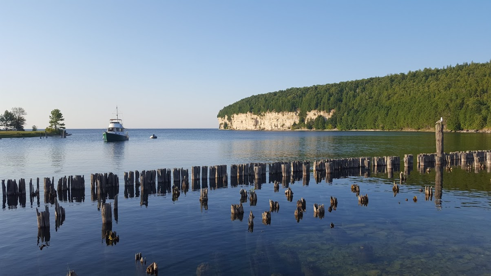
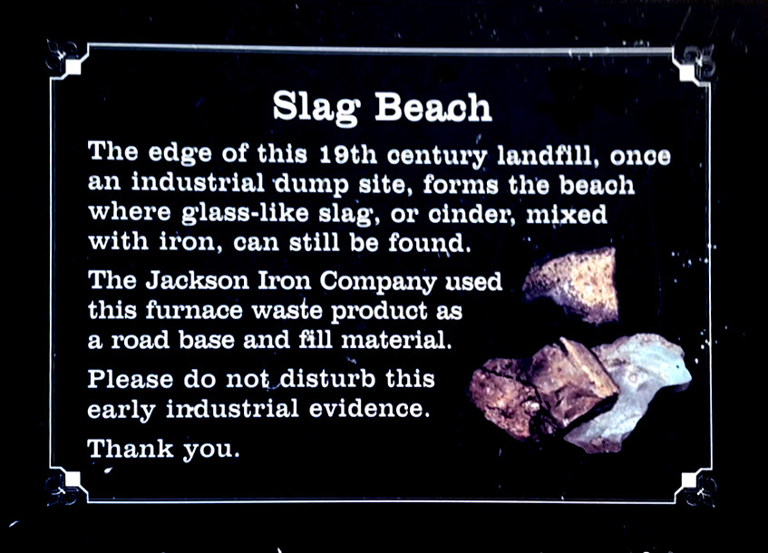

okay, cool.
here we go
basically, the way i organized all this is like each box contains curios from different exotic lands. (ie. the midwest, the amazon (dot com), and irvine, california)
so, this one is obviously 𝕋ℍ𝔼 𝕄𝕀𝔻𝕎𝔼𝕊𝕋 𝔹𝕆𝕏, aka 𝒜𝒷𝒷ℯ𝓎 ℛℴ𝒸𝓀𝓈! (get it? ROCKS bc it contains a lot of various rocks? yeah.)
i guess first ill talk about the coffee mug.
since you are a bright young lady who knows how to read, you probably have already gathered that it comes from the Art Institute in Chicago. I've already told you a bunch about it, I think. It's an amazing place, and i think you would love it there. So many cool famous paintings and also a lot of cool unfamous paintings. And i know u've got what it takes end up in there some day, Abbey!
in front of the museum are two very noble metal lion statues. they reminded me of you. i guess lions will forever remind me of you, leo! but anyway, that's why I chose this specific mug for you. one day hopefully you can meet those lions yourself!
next, inside the cup...
yes, i really did get you a rock. happy birthday!
well, actually, it's a bunch of rocks. i thought they were cool. they were from a beach right next to an abandoned coal mine in Minnesota
it was really pretty there so naturally i thought of you and decided to grab you a few rocks
i dont think i was supposed to, but they were cool and had a backstory so i did anyway
here's a few pictures of me awkwardly smiling at the spot where i got the rocks, and also another really pretty picture i got at a place nearby, and also a sign explaining the rocks

